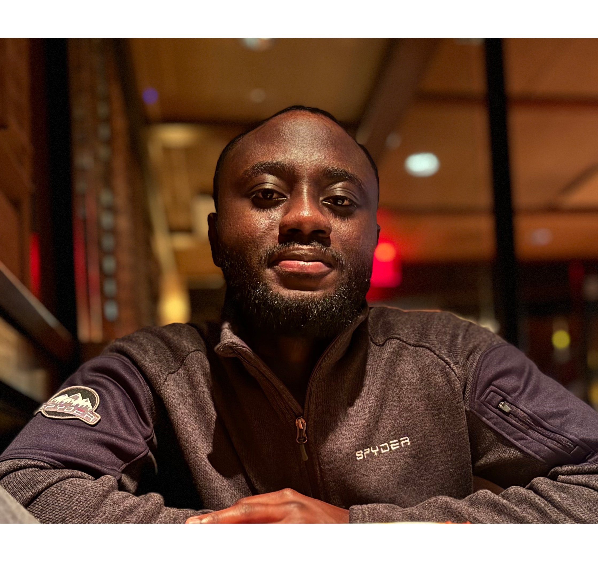

📞 USA (215) 253-7658 | Ghana 020 9970 207
✉ info@thriveworksghana.org
📞 USA (215) 253-7658 | Ghana 020 9970 207
✉ info@thriveworksghana.org
Kwame Owusu-Ansah graduated KNUST in 2015 with a degree in civil engineering. During that period, the country was in an economic downturn which made it difficult to secure long-term stable jobs. He began to have a greater appreciation for the skills he had obtained during his youth, such as: web design, programming, and computer aided design.
These skills allowed him to obtain freelance and short-term contracts in various industries ranging from ports and harbors, mining, general construction, and NGOs across the country. Even though he acquired his engineering license and joined the Ghana Institution of Engineering, he realized that value creation (using our time and God-given abilities to serve the needs of others) could make a great impact in his nation.
By constantly pursuing opportunities and networking, he got partnerships including the UrbanPromise International Fellowship, which granted him the opportunity to train with a nonprofit while he obtained a Master's Degree in Organizational Development from Cairn University in Pennsylvania. With the support of an incredible team working on the ground as well as advisors, ThriveWorks Ghana was birthed as a concept in 2021 to help serve the youth. This concept went through various stages of testing, discovery, and validation, and was officially established in January 2023.
As our plan is discovery driven — we learn, adapt, and evolve so we can meet the needs of our stakeholders.

Table 1 — Beneficiary Experience Table
| Stage | Objective | Deliverables | Key Metrics |
|---|---|---|---|
| Needs Assessment | Identify the needs of the target population | Report on the needs of the target population | Demographic data, key challenges and opportunities identified |
| Program Development | Develop a program that addresses the identified needs | Detailed program plan and budget | Program structure, budget, and resources identified |
| Pilot Testing | Test the program with a small group of beneficiaries | Feedback from beneficiaries and program staff | Program effectiveness and feasibility assessed |
| Program Refinement | Refine the program based on pilot testing results | Revised program plan and budget | Program structure and content revised based on feedback |
| Program Roll-out | Implement the refined program on a larger scale | Program delivered to a larger group of beneficiaries | Number of beneficiaries reached, program delivery rate |
| Program Evaluation | Evaluate the effectiveness of the program and identify areas for improvement | Evaluation report and recommendations | Program effectiveness and impact assessed, recommendations for improvement |
| Program Scaling | Scale up the program to reach a larger number of beneficiaries | Expanded program delivered to a larger number of beneficiaries | Number of beneficiaries reached, program delivery rate |